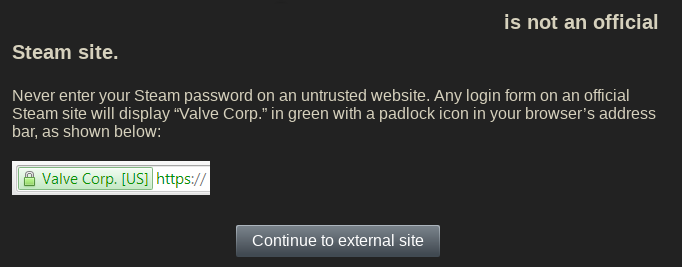

Fake privacy / security initiatives
"Beware of false prophets, which come to you in sheep’s clothing, but inwardly they are ravening wolves."
Do Not Track
Invented in 2009, this browser header tells websites you visit that you do not want to be tracked. 9 years and thousands of articles and discussions about DNT later, and there is still not even a standard for what "tracking" exactly is it supposed to prevent - even though they promised to create one long ago. Needless to say, websites can interpret DNT however they want, or even ignore it altogether. How much effort has been wasted on this dud - effort that could have been spent on creating and improving browser extensions that actually protect you from tracking. DNT, on the other hand, just gives the illusion of privacy to unsuspecting users - which is worse than doing nothing at all. Let's be real here - cooperating with trackers could have never worked anyway - since they don't care about playing fair.
European Union cookie law
If you've spent any time on the Internet at all, you've surely seen some obnoxious cookie notices, such as: 
In 2011, the European Union has created a law which requires websites to inform visitors about the kind of data that will be stored on their computers, its purpose, as well as the need to get consent from users before storing anything. There were also guidelines for the duration of the cookie's existence. Anyway, a report (archive) has shown that most websites do not follow all the requirements properly. Even if they did, the people who would benefit from this information won't understand it and will click through it instead; while the aware ones have already blocked the cookies - but will still be bothered by the obnoxious notices. It should also be mentioned that the most important tracking cookies - the social network ones - are exempt from the law! So you can still be tracked by Facebook and friends; talk about a wasted opportunity.
Private Browsing / Incognito Mode
Almost every browser has this under different names. Let's be clear here - this does nothing whatsoever to protect you from nosy ISPs or trackers; and, while most browsers do admit that - some, like Waterfox, have tried to ride the wave of confusion to pretend that their improved private browsing (archive) does something more. A report has shown (archive) that many people do in fact believe that this mode guards them from online spying; as far as I'm concerned, browsers should remove this if they want to stay honest - or at least change its name.
Hooktube / Invidious
YouTube frontends. Hooktube used to claim that they Keep your data private from the G
(...oogle) (see here) - at least before they were forced to use the YouTube API. However, they still connected to Google video servers, so the whole reason for their existence was a fraud. Now, Invidious does the same thing but does not claim anything; regardless, they are not YouTube proxies. Note: Invidious does support youtube proxying now (since I think February 2019?). But regardless, I recommend using youtube-dl to download YouTube videos - with it, you can watch them as many times as you want, whenever you want - without ads or slowdown, google connections or any other connections.
"End-to-end" encryption
For the last few years, services which have traditionally been famous for their spying (such as Skype, Viber, or the Facebook operated WhatsApp (archive)) have been loudly announcing their support of "end-to-end" encryption - which should mean that only you and the person you are communicating with can see the content of your messages. However, it is still them generating the keys, and therefore relies on their trustworthiness. Many allegedly "private" E-mail providers also suffer from this flaw - read my report. The moral of the story - if you don't manage the encryption yourself, it's not truly end-to-end, and shouldn't be relied upon.
Forced "protection"

This is simply a huge slippery slope - first it was plugins, then addons, then browser settings kept getting dumped into about:config or the abyss. What's next - deciding what sites you can or can't visit? Isn't Google SafeBrowsing just that? Maybe one day, they will block all "insecure" HTTP websites. Surely that's going too far - or is it? In fact, both Firefox (archive) and Chrome (archive) have been trying to get rid of HTTP for a long time. Great, thanks Mozilla and Google for "protecting" me from all this malicious stuff - but who will protect me from you? That is the real question. Of course, people don't realize there is an issue until something they use regularly breaks. The solution, of course, is to only use software that actually respects you instead of treating you like a baby; security will always be the responsibility of the user - you cannot "protect" people from everything. Even if you could, it would not be desirable; there is always a trade-off between security and functionality, and people should be able to choose at which point of the spectrum do they want to be.
Silent or forced updates
An extension of the above; they are the truck through which undesirable changes get dumped onto unsuspecting users. UI modifications, configuration option removals, or the aforementioned blockages; regardless - auto-updates transfer control of the software from the users to developers. And there is no excuse to at least not ask the user before proceeding. The horror stories of updates breaking things are numerous - for example:
- Firefox freezing the computer (direct link) (archive)
- Firefox changing the user's settings (direct link) (archive)
- Another example of the same (direct link) (archive)
- Windows 10 updates are famous for breaking shit (direct link) (archive)
My Firefox was updated to it yesterday. It froze when I tried to use it and froze the computer to where I had to use the power button to get out of it. I tried Firefox in safe mode and it still froze. I see messages in Mozilla Zine saying the same thing.
I would appreciate very much if Firefox update informed me about changes it does to my settings in detail. I want to have the chance to not be surprised by a new default search engine or a disabled https feature for example.and
I first noticed it when it first introduced the "do not track me" setting. I enabled that and the next time I checked, it was disabled.
Jern informed me that Firefox reset the block lists setting of the browser's Tracking Protection feature from strict to basic when the browser was updated to version 50 from Firefox 49.0.2. Basic protection is the recommended and default value of the setting. It does not block as many trackers as the strict blocking list.and
Michel told me a week later that a recent Firefox update (to 50.0.1 or 50.0.2) did reset another preference. This time an URL string that Michel modified on Firefox's about:config page.
the most common complaints after updating to Windows 10 were software compatibility issues, such as programs not working properly, or at all (21 percent), followed by hardware problems, such as printers and speakers no longer working (16 percent). Members also struggled with issues such as email accounts no longer syncing and personal files being inadvertently deleted, said Which? "Some consumers suffered PC slowdown and, in some cases, members reported complete PC failure. Of those in the survey who experienced this, 46 percent said they had paid someone to fix it, at an average cost of £67 each," noted the consumer group.
External link filters
Didn't know whether to put this here or in Principles of bad software design - but the alleged point of it is security, so it's here. How does this work? Briefly - certain sites, whenever a link is posted to them - will NOT let you go there directly but only through their special redirect. If this actually improved security I would just consider it as simple babying - similar to the auto-updates; but the reality is much more malicious as usual. Not only are the link filters annoying, but they make tracking easier by putting the website you're leaving to into the URL. Also, people can actually fucking see the link they're clicking on, so the security benefit is doubtful at best. Twitter goes even further and prevents users from knowing where they're going to - every web address is replaced by their t.co shortener. They even admit this is used for censorship (archive):
A link converted by Twitter’s link service is checked against a list of potentially dangerous sites.Don't bother looking at those links, son - Mommy Twitter will protect you! But maybe they should first focus on their own security than that of others; Steam, for example, had a breach (archive) where
users were able to access other people’s game libraries, and were able to see sensitive information including names, home addresses, email addresses, purchase history, Paypal account information, and even partial credit card numbers.Twitter had an even worse one (archive) where up to 250 000 accounts were compromised. As I said earlier - security should be the responsibility of the user; we're not babies and treating us like them always results in disaster.
Firefox Send
Mozilla's allegedly private file upload service - analyzed in more detail here.
Firefox Lockbox
Mozilla's password storage service - analyzed in more detail here.
EFF's "Who has your back?"
They've made many of these over the years - the most recent one as of writing is https://www.eff.org/wp/who-has-your-back-2019 (archive). Briefly, the report rates the big corpos' censorship policies, but the most important criteria - that is, how much they actually censor - is completely ignored. Instead they focus on whether the censors graciously tell you that you've been suspended or that a government has requested a takedown. And so a known violator like youtube gets 4 fucking stars out of 6- what a joke. They even got a point just for having an appeal system that doesn't even work. There is only one aim of these reports - to justify the big corpos so that naive / inexperienced people don't abandon their services which don't respect them.
Back to the front page